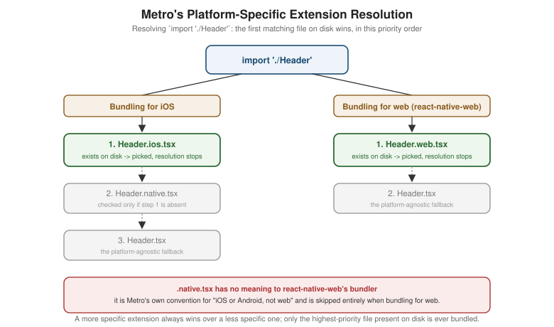

Platform-Specific Code and Device APIs
|
This content was generated with the assistance of AI and should be verified against the official documentation before being relied on in production. |
Accessibility closed out the pages built entirely on Core Components
that render identically — modulo a screen reader’s own platform conventions — on both platforms. This page
turns to the opposite end of the spectrum: the surface area where iOS and Android are simply different enough
that Places needs to know, at build time or at runtime, exactly which platform it is running on, plus the
roster of device- and app-lifecycle-level APIs (AppState, Appearance, Linking, Share, Vibration, and
more) that every non-trivial app eventually reaches for regardless of platform. Two adjacent pages cover parts of
this surface in more depth than this page does: Device
Capabilities (next) covers the full Android/iOS permission model and the specific hardware, sensor, camera, and
push-notification APIs that PermissionsAndroid only gets a brief mention here, and
Navigation covers `Linking’s deep-link routing and `BackHandler’s
hardware-back interception in the detail they deserve, since both live more naturally next to the navigator that
actually consumes them.
The Platform Module
Platform, imported from react-native, is the first and most direct way to answer "which platform am I running
on right now":
import { Platform } from 'react-native';
Platform.OS; // 'ios' | 'android' (also 'windows' | 'macos' | 'web' on the respective out-of-tree platforms)
Platform.Version; // number: the Android API level (e.g. 34) -- string on iOS: the OS version (e.g. '18.0')
Platform.isPad; // boolean, iOS only: true when running on an iPad rather than an iPhone
Platform.isTV; // boolean: true on Apple TV or Android TVPlatform.OS is a plain string comparison away from the simplest possible platform branch (Platform.OS ===
'ios'), but Platform.select is almost always the better shape for choosing a value rather than writing an
if/else around it: it takes an object keyed by platform name plus an optional default, and returns whichever
key matches the running platform:
import { Platform, StyleSheet } from 'react-native';
const styles = StyleSheet.create({
card: {
borderRadius: 10,
...Platform.select({
ios: { shadowColor: '#000', shadowOffset: { width: 0, height: 1 }, shadowOpacity: 0.15, shadowRadius: 3 },
android: { elevation: 3 },
default: {},
}),
},
});A Platform.select value can also be an entire component or a function rather than a style object, which is
exactly how the Places screen header below picks a different back-button icon per platform without an if in
the render body at all. Platform.Version’s differing type across platforms (`number on Android, string on
iOS) is a common source of a subtle bug — comparing it against a number on iOS silently does nothing useful — so a version-gated branch on iOS parses it explicitly (parseInt(Platform.Version, 10)) rather than comparing
the raw value.
Platform-Specific File Extensions
Beyond a runtime Platform.OS check inside one file, Metro (covered
in full later in this section) also resolves an import to a different file on disk automatically, based on
four recognized suffixes before the ordinary extension:
-
.ios.tsx— used only when bundling for iOS. -
.android.tsx— used only when bundling for Android. -
.native.tsx— used when bundling for iOS or Android, but not for a web build; the escape hatch for code that needs to diverge from a web build without needing two near-identical.ios.tsx/.android.tsxcopies. -
.web.tsx— used only when bundling for web, viareact-native-web.
Metro picks the most specific file present for the current build target and silently ignores the rest — there is
no explicit import './Header.ios', just import './Header', with the suffix resolved automatically the same
way index.ts is resolved automatically inside a directory import. The precedence order when more than one
candidate exists for the same base name is: the platform-specific file (.ios.tsx/.android.tsx) first, then
.native.tsx, then the plain .tsx as the universal fallback — and, separately, for a web build:
.web.tsx first, then the plain .tsx (a web build never considers .native.tsx at all, since that suffix
exists specifically to be excluded from web bundles).

This mechanism keeps a component’s call sites identical across platforms (import { Header } from './Header'
never changes) while letting its implementation diverge exactly where — and only where — the platforms
genuinely differ; a component with no platform divergence at all simply never grows an .ios.tsx/.android.tsx
pair, and Metro resolves the plain .tsx for every target unchanged.
Device and App-State APIs
The rest of `react-native’s platform-adjacent surface is a set of independent modules, each answering a narrow question about the device or the app’s own lifecycle rather than about layout or rendering.
Dimensions and useWindowDimensions
Already covered in full on Styling's units section: Dimensions.get('window')
reads the window size once, synchronously, outside of a component, while the useWindowDimensions() Hook
subscribes to rotation and split-screen/multi-window size changes and re-renders automatically. Nothing about
either API is platform-specific beyond the values they report, which is why they are only linked here rather than
re-explained.
AppState
AppState reports which of three lifecycle states the app is currently in, and notifies a listener when that
changes:
-
'active'— the app is in the foreground and receiving user input. -
'background'— the app is not visible at all (the user switched to another app, or, on Android, pressed the home button). -
'inactive'(iOS only) — a transient state entered during a system-level interruption while still partially visible — an incoming phone call, Control Center, or the app switcher overlay being dragged into view — that resolves back to'active'or on to'background'almost immediately; Android apps never observe'inactive', moving directly between'active'and'background'.
import { AppState } from 'react-native';
AppState.currentState; // 'active' | 'background' | 'inactive', read synchronously at any time
const subscription = AppState.addEventListener('change', (nextState) => {
console.log('App state changed to', nextState);
});
subscription.remove(); // when the listener is no longer neededPlaces uses this transition, not the states themselves, as the trigger for pausing and resuming background work — shown below with the pending-writes sync worker.
Appearance
Also already covered on Styling's dark-mode section: Appearance.getColorScheme()
and Appearance.addChangeListener(callback) are the imperative APIs the useColorScheme() Hook (and Places's
own ThemeProvider) are built on top of, useful directly only outside of a component — a non-React module that
needs to react to an appearance change without a Hook.
Linking
Linking.openURL(url) opens an arbitrary URL — https://, tel:, mailto:, or the app’s own custom scheme — in the OS’s own handler, and Linking.getInitialURL()/the 'url' event answer "did this app just get opened by
a URL, and if so, which one". Both are the foundation deep linking is built on, but the routing side of that — matching an incoming URL against RootStackParamList and navigating to PlaceDetails with the right placeId — belongs to, and is covered in full by, Navigation; this page only names
the module so the "share this place" button below can build on it.
Share
Share.share({ message, url, title }), which opens each platform’s native share sheet, was already introduced on
Modals, Alerts, and Progress for sharing a place’s name
and notes as plain text. The Places: Platform-Aware Code section below extends that same call with a url
field carrying a deep link back into the app, rather than repeating the plain-text version.
Vibration
Also introduced on Modals, Alerts, and Progress:
Vibration.vibrate(pattern) for raw device vibration, with expo-haptics and Places's own HapticTap Turbo
Native Module (Native Modules and Components) as the
progressively more nuanced alternatives. Not repeated here.
Keyboard
Covered in full on Text Input and Forms: Keyboard.dismiss()
closes the on-screen keyboard imperatively, and Keyboard.addListener('keyboardDidShow', handler) /
'keyboardDidHide' subscribe to its show/hide lifecycle. Mentioned here only for completeness of the device-API
roster.
I18nManager and Right-to-Left Layout
I18nManager.isRTL reports whether the app is currently laying out right-to-left (Arabic, Hebrew, and a handful
of other locales); React Native’s own Flexbox implementation flips flexDirection: 'row', marginStart/marginEnd,
and absolute left/right automatically in that mode, so most layouts built with the logical
Start/End properties rather than physical left/right need no additional code at all.
I18nManager.allowRTL(true) opts the app into following the device’s RTL locale setting in the first place, and
I18nManager.forceRTL(true) forces RTL layout regardless of locale — both take effect only after the next app
restart on iOS and Android (there is no live-toggle equivalent to `useColorScheme()’s instant update), which is
why either call is made once at startup, not from a settings screen expecting an immediate visual change.
PermissionsAndroid
PermissionsAndroid.request(permission, rationale) and PermissionsAndroid.check(permission) request and
inspect a single Android runtime permission (location, camera, and similar dangerous-permission-group entries),
returning one of PermissionsAndroid.RESULTS.GRANTED/DENIED/NEVER_ASK_AGAIN. iOS has no equivalent module — permission prompts there are driven by Info.plist usage-description strings and fire automatically the first
time a permission-gated API is called. The full permission model on both platforms, including Expo’s declarative
permissions config as the alternative to calling PermissionsAndroid directly, is
Device Capabilities's subject, not this page’s.
BackHandler
BackHandler.addEventListener('hardwareBackPress', handler) intercepts Android’s hardware/gesture back action — handler returning true marks the event as handled (staying on the current screen, e.g. to close an open modal
first), and false lets the default behavior (usually popping the navigation stack, or exiting the app from the
root screen) proceed; the module has no effect at all on iOS, which has no hardware back button. Places's own
usage — closing `AddPlaceScreen’s photo picker sheet on back before letting back navigate away from the screen
itself — is covered alongside the rest of the navigation stack on
Navigation.
Settings (iOS)
Settings.get(key) and Settings.set({ key: value }) read and write iOS’s native NSUserDefaults store directly — the same underlying storage UserDefaults reads in Swift — useful specifically when a value needs to be
visible to, or shared with, native iOS code (a widget, a Siri Shortcut, or a value set by the native side before
the JavaScript runtime even starts) rather than staying entirely inside React Native’s own JavaScript-side
storage. It has no Android equivalent; a cross-platform key/value need is
Storage and Offline's subject (AsyncStorage, MMKV, and
expo-secure-store), not Settings.
DevSettings
DevSettings is a development-only module, stripped from release builds, for extending the Dev Menu introduced
on Getting Started with React Native:
import { DevSettings } from 'react-native';
DevSettings.addMenuItem('Clear pending writes', () => {
// e.g. wipe placesRepository's pending_writes queue during development
});
DevSettings.reload(); // programmatically reloads the app, the same effect as the Dev Menu's "Reload"A custom Dev Menu item like the one above is a convenient way to reach a debug-only action — clearing a local queue, forcing a particular API error, seeding fixture data — without wiring a real UI control for something no end user should ever see.
DOM-Like Ref Node APIs (Since React Native 0.82)
Since React Native 0.82, a ref attached to a Core Component additionally exposes a small set of read-only,
web-Element-shaped methods directly on the native component instance, layered on top of the New Architecture’s
Fabric shadow tree: getBoundingClientRect() returns the component’s current layout rectangle in the same
{ x, y, width, height, top, left, bottom, right } shape a web Element.getBoundingClientRect() returns, and
parentNode walks up to the component’s rendered parent, mirroring the DOM property of the same name. Both
give a component web-like layout introspection — "where exactly is this view on screen right now, and what
contains it" — as a lighter-weight, synchronous alternative to the older measure()/measureInWindow() ref
methods, without a separate native measurement round trip; a team already comfortable reasoning about layout the
way react-dom exposes it can reach for these instead of relearning React Native’s own imperative measurement
callbacks.
Places: Platform-Aware Code
(a) A Platform.select-Styled Screen Header
PlaceDetailsScreen’s header renders a platform-appropriate back-button glyph and a platform-appropriate shadow,
both chosen with `Platform.select rather than an inline Platform.OS branch:
// src/features/places/screens/PlaceDetailsScreen.tsx (excerpt -- header)
import { Platform, Pressable, StyleSheet, Text, View } from 'react-native';
import { useTheme } from '../../../theme/ThemeProvider';
const backIcon = Platform.select({ ios: '‹', android: '←', default: '←' });
function ScreenHeader({ title, onBack }: { title: string; onBack: () => void }) {
const theme = useTheme();
const styles = createStyles(theme);
return (
<View style={styles.header}>
<Pressable onPress={onBack} hitSlop={12} accessibilityRole="button" accessibilityLabel="Go back">
<Text style={styles.backIcon}>{backIcon}</Text>
</Pressable>
<Text style={styles.title} numberOfLines={1}>{title}</Text>
<View style={styles.headerSpacer} />
</View>
);
}
function createStyles(theme: ReturnType<typeof useTheme>) {
return StyleSheet.create({
header: {
flexDirection: 'row',
alignItems: 'center',
paddingHorizontal: theme.spacing.md,
paddingVertical: theme.spacing.sm,
backgroundColor: theme.colors.surface,
...Platform.select({
ios: { shadowColor: '#000', shadowOffset: { width: 0, height: 1 }, shadowOpacity: 0.12, shadowRadius: 2 },
android: { elevation: 4 },
default: {},
}),
},
backIcon: { fontSize: 26, color: theme.colors.primary, width: 32 },
title: { flex: 1, fontSize: theme.typography.size.lg, fontWeight: theme.typography.weight.bold, color: theme.colors.text, textAlign: 'center' },
headerSpacer: { width: 32 },
});
}android’s single `elevation number and ios’s four separate `shadow* properties are not interchangeable one
for one — elevation also affects Android’s touch z-ordering, and iOS has no elevation concept at all — which
is exactly the kind of divergence Platform.select exists to localize to one spot instead of scattering
Platform.OS checks through the render body.
(b) Pausing the Sync Worker in the Background
Places's offline-first persistence (src/features/places/storage/placesRepository.ts, established in full on
Storage and Offline) queues local mutations in a pending_writes
table and drains it through a sync worker whenever src/lib/netinfo.ts reports connectivity has returned. Running
that drain while the app sits in the background wastes battery and risks losing to the OS’s own background-task
time limit mid-write, so an AppState listener pauses it the moment the app leaves 'active' and resumes it — with an immediate drain attempt, in case connectivity or pending writes changed while backgrounded — the moment
it returns:
// src/features/places/storage/syncWorker.ts
import { AppState } from 'react-native';
import type { AppStateStatus } from 'react-native';
import { drainPendingWrites, startPendingWritesAutoSync, stopPendingWritesAutoSync } from './placesRepository';
export function startAppStateAwareSync(): () => void {
// netinfo.ts's connectivity listener already triggers a drain on reconnect; this only adds
// "don't run that drain -- or its polling -- while the app is not in the foreground".
startPendingWritesAutoSync();
const subscription = AppState.addEventListener('change', (nextState: AppStateStatus) => {
if (nextState === 'active') {
startPendingWritesAutoSync();
void drainPendingWrites(); // catch up immediately, don't wait for the next NetInfo event
} else if (nextState === 'background') {
stopPendingWritesAutoSync();
}
// 'inactive' (iOS-only, transient) is deliberately ignored: pausing/resuming for it would thrash
// the worker during a brief interruption that resolves back to 'active' almost immediately.
});
return () => subscription.remove();
}startAppStateAwareSync() is called once from App.tsx alongside ThemeProvider and the font-loading gate from
Styling, and its returned cleanup function is wired into that root
component’s own unmount path. Ignoring 'inactive' above is deliberate, matching the mermaid diagram: treating
every momentary interruption as a full pause/resume cycle would start and stop the worker far more often than the
underlying network condition it reacts to actually changes.
(c) Sharing a Place, With a Deep Link
Building on Share.share() as already introduced on
Modals, Alerts, and Progress, the details screen’s share
button adds a url pointing back into Places itself — a universal/app link that, once tapped from whatever app
receives the share (Messages, Mail, a notes app), opens Places directly to that same place via the Linking-driven
routing Navigation covers in full:
// src/features/places/screens/PlaceDetailsScreen.tsx (excerpt -- share button)
import { Pressable, Share, Text } from 'react-native';
import type { Place } from '../types';
function buildPlaceDeepLink(placeId: string): string {
return `https://places.irurueta.com/place/${placeId}`; // resolves to PlaceDetails via Navigation's linking config
}
function SharePlaceButton({ place }: { place: Place }) {
const onShare = async () => {
await Share.share({
message: `${place.name}\n${place.notes}`,
url: buildPlaceDeepLink(place.id), // iOS attaches `url` alongside `message`; Android folds it into the text
title: place.name,
});
};
return (
<Pressable onPress={onShare} hitSlop={8} accessibilityRole="button" accessibilityLabel="Share this place">
<Text>Share</Text>
</Pressable>
);
}Share.share()’s `url field is honored as a distinct attachment on iOS’s share sheet but simply appended to
message’s text on Android, which is why `message alone (the name and notes) still reads sensibly on Android
even though the deep link only shows up there as trailing text rather than a separate rich preview.